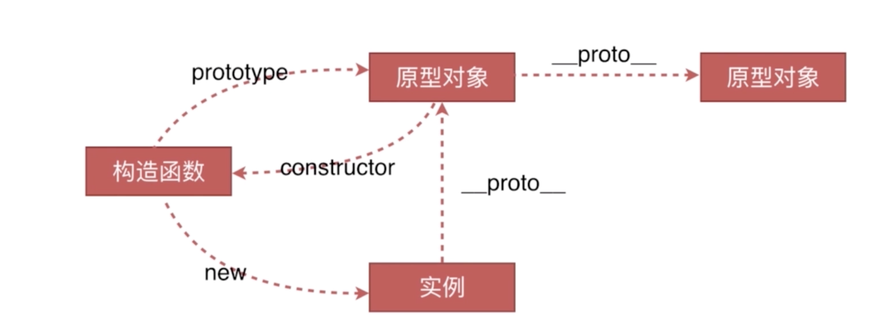
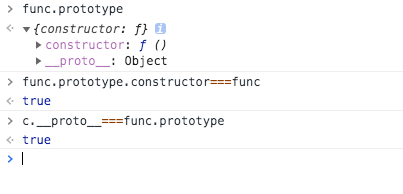

# 原型链的介绍
# 什么是原型？
js 中，任何对象都有一个原型对象，这个原型对象由对象的内置属性_proto_指向它的构造函数的 prototype 指向的对象，即任何对象都是由一个构造函数创建的，但是不是每一个对象都有 prototype，只有方法才有 prototype。
# 什么是原型链？
原型链的核心就是依赖对象的_proto_的指向，当自身不存在的属性时，就一层层的扒出创建对象的构造函数，直至到 Object 时，就没有_proto_指向了。
# 创建对象的方法
- 字面量
1 | var a = { name: 'demo' }; |
- 字面量（使用了 Object 的构造方法）
1 | var b = new Object({ name: 'demo' }); |
- 构造函数
1 | var func = function () { |
- Object.create
1 | var demo = { name: 'demo' }; |
# 创建对象的过程
首先，当我们声明一个 function 关键字的方法时，会为这个方法添加一个 prototype 属性，指向默认的原型对象，并且此 prototype 的 constructor 属性也指向方法对象。此二个属性会在创建对象时被对象的属性引用。
1 | function Hello() { |
我们如果用 Hello 创建一个对象 h，看这个对象有什么属性。
1 | console.log(h.constructor); // function Hello(){} |
我们惊喜的发现，new 出来的对象，它的 constructor 指向了方法对象，它的_proto_和 prototype 相等。
即 new 一个对象，它的_proto_属性指向了方法的 prototype 属性，并且 constructor 指向了 prototype 的 constructor 属性。
# 创建对象的过程
1 | function Hehe(name) { |
过程：先创建一个空对象，设置一个_proto_指向方法的原型，设置 constructor，用新对象做 this 指向方法，返回新对象。
# 原型以及原型链关系


# 原型
任何对象都有一个原型对象，这个原型对象由对象的内置属性_proto_指向它的构造函数的 prototype 指向的对象，即任何对象都是由一个构造函数创建的，但是不是每一个对象都有 prototype，只有方法才有 prototype。
1 | function Person() { |
# 构造函数
用 function 声明的都是函数，而如果直接调用的话，那么 Person () 就是一个普通函数，只有用函数 new 产生对象时，这个函数才是 new 出来对象的构造函数。
# 原型链
原型链的核心就是依赖对象的_proto_的指向，当自身不存在的属性时，就一层层的扒出创建对象的构造函数，直至到 Object 时，就没有_proto_指向了。
属性搜索原则：
- 当访问一个对象的成员的时候，会现在自身找有没有，如果找到直接使用。
- 如果没有找到，则去原型链指向的对象的构造函数的 prototype 中找，找到直接使用，没找到就返回 undifined 或报错。
1 | function Person(name){ |
# 原型继承
1 | //原型继承的基本案例 |
# instanceof
instanceof 运算符用来判断一个构造函数的 prototype 属性所指向的对象是否存在另外一个要检测对象的原型链上
1 | c; // function {name: "demo"} |
为什么会是 true 呢？？
1 | c; // function {name: "demo"} |
所以，instanceof 不能用来判断对象的类型！！！
那么我们用什么来判断对象的类型呢？
# constructor
1 | c.__proto__.constructor===func // true |
# new 运算符
当我们用 new 运算符 new 一个构造函数产生一个实例时，比如说： var obj = new Func 时，其背后的步骤是这样的：
- 创建一个继承自 Func.prototype 的新对象；
- 执行构造函数 Func ，执行的时候，相应的传参会被传入，同时上下文 (this) 会被指定为第一步创建的新实例；
- 如果构造函数返回了一个 “对象”, 那么这个对象会取代步骤 1 中 new 出来的实例被返回。如果构造函数没有返回对象，那么 new 出来的结果为步骤 1 创建的对象。
注意：new Func 等同于 new Func ()，只能用在不传递任何参数的情况。
# new 的模拟实现
1 | //new运算符原理实现 |
其中 var newObj = Object.create (fun.prototype) 的意思是：创建一个新对象 newObj，并让 newObj.__proto__ 指向 fun，即 newObj.__proto__=== fun 返回 true。
方法的使用
1 | var strObj = new1(String); |
可以看到，new1 函数的运行效果和 new 运算符是一样的。我们继续给 String 的原型上添加一个方法，看看 new1 函数得到的 strObj 能否继承到这个方法：
1 | String.prototype.defineByN = function(){ |
可以看到 new1 函数得到的 strObj 继承了到这个方法。
# 问题：为什么 Object.create 创建的对象和其他几种不一样呢？
因为使用原型链进行的创造对象。
1 | d.__proto__===demo; // true |